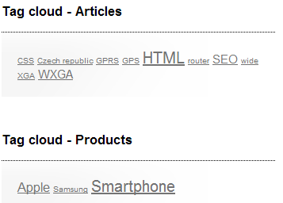

Displaying tags on a page
Tag clouds display tags associated with specific pages. These tags are displayed in the form of links and those with higher occurrence are displayed in higher font size. When a site visitor clicks on one of the links, the system displays a list of all pages with the given tag. To add a tag cloud to a page, use the Tag cloud web part.

Common use
The Tag cloud "works in pair" with a repeater web part. When a user clicks on a tag in the tag cloud, the repeater web part displays a list pages with the clicked tag. You can place the repeater either on the same page as the tag cloud or on a different page to which the site visitor is then redirected.
You can see an example of this setup on the sample Corporate Site site under Examples -> Web parts -> Tagging & Categories -> Tag cloud.
Pairing the Tag cloud and Repeater web parts
In order for the two web parts to cooperate, you have to correctly set some of their properties.
Tag cloud:
The placement of the repeater is defined by the Tag cloud's Page list URL property. In case that the repeater is placed on the same page as the tag cloud, the value should be left blank. In case that it is placed on some other page, enter the alias path of that page.
ID of the clicked tag is transferred to the repeater in the form of a query string parameter. You can set the name of the parameter in the Query string parameter name property. The repeater then displays a list of pages based on the value it gets via this parameter.
Repeater:
Set the value of the Path parameter to the location in the content tree where the pages that you want to display are stored.
Set the value of the Page types parameter to the page types that you want displayed by the repeater.
Select the transformations that you want to use for the Transformation and Selected items transformation.
Finally, use the following code as a value for the repeater's WHERE condition parameter. The tagid value should be replaced by the name set in the Tag cloud's Query string parameter name:
('{?ToInt(tagid, "")?}' = 0 AND '{?tagname?}'='') OR (DocumentID IN (SELECT DocumentID FROM CMS_DocumentTag WHERE TagID = {? ToInt(tagid) ?}))This condition ensures displaying of pages based on the received tagid (or differently named parameter) from the Tag cloud web part.